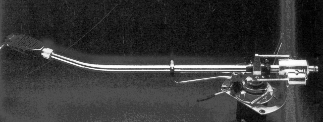
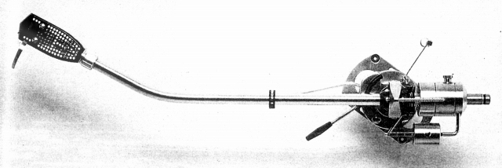
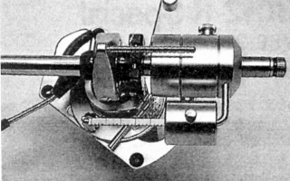
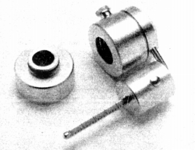
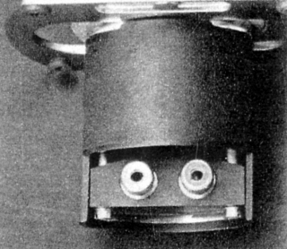

3012-R Special



■価格 88,000円
■型式 スタティックバランス型
■全長 400�o
■実行長 307.3�o
■オーバー・ハング
■トラッキングエラー
■針圧範囲 0〜4g
■アーム高さ調整 あり
■アームベース穴
■アンチスケートディバイス あり
■アームリフター あり
■ラテラルバランサー あり
■カートリッジ自重 1.5〜14、13〜26g(シェル重量6.4gの時）
■線間容量
■発売 1980年
■販売終了 年頃
■備考 価格は1980年頃のもの
1983年には120,000円
1993年には150,000円
1994年には130,000円
パイプアームにはアルミ合金の約3倍の強度を持つ高剛性
ステンレス合金を採用。パイプ内部にはバルサ材で共振を抑止。
ナイフエッジに、カーボンファイバーを採用。
スライドベース（移動範囲 25�o）装備。
ヘッドシェル取付角調整機構付き。
ケーブル着脱式。


（分割式ウエィトと端子部）
3012-R
Pro導入後あたりから単に「3012-R」と表記されるようになった。
SMEのインデックスへ